In the remainder of this chapter, we will discuss extensions to postings list data structures and ways to increase the efficiency of using postings lists. Recall the basic postings list intersection operation from Section 1.3 (page  ): we walk through the two postings lists simultaneously, in time linear in the total number of postings entries. If the list lengths are
): we walk through the two postings lists simultaneously, in time linear in the total number of postings entries. If the list lengths are  and
and  , the intersection takes 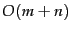 operations. Can we do better than this? That is, empirically, can we usually process postings list intersection in sublinear time? We can, if the index isn't changing too fast.
, the intersection takes 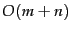 operations. Can we do better than this? That is, empirically, can we usually process postings list intersection in sublinear time? We can, if the index isn't changing too fast.
One way to do this is to use a skip list by augmenting postings lists with skip pointers (at indexing time), as shown in Figure 2.9 . Skip pointers are effectively shortcuts that allow us to avoid processing parts of the postings list that will not figure in the search results. The two questions are then where to place skip pointers and how to do efficient merging using skip pointers.
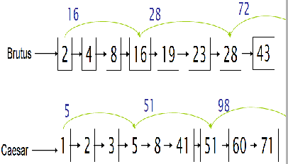
Postings lists with skip pointers.The postings intersection can use a skip pointer when the end point is still less than the item on the other list.
Consider first efficient merging, with Figure 2.9 as an example. Suppose we've stepped through the lists in the figure until we have matched on each list and moved it to the results list. We advance both pointers, giving us 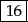 on the upper list and 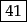 on the lower list. The smallest item is then the element on the top list. Rather than simply advancing the upper pointer, we first check the skip list pointer and note that 28 is also less than 41. Hence we can follow the skip list pointer, and then we advance the upper pointer to 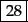. We thus avoid stepping to and 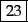 on the upper list. A number of variant versions of postings list intersection with skip pointers is possible depending on when exactly you check the skip pointer. One version is shown in Figure 2.10 . Skip pointers will only be available for the original postings lists. For an intermediate result in a complex query, the call 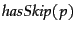 will always return false. Finally, note that the presence of skip pointers only helps for AND queries, not for OR queries.
Where do we place skips? There is a tradeoff. More skips means shorter skip spans, and that we are more likely to skip. But it also means lots of comparisons to skip pointers, and lots of space storing skip pointers. Fewer skips means few pointer comparisons, but then long skip spans which means that there will be fewer opportunities to skip. A simple heuristic for placing skips, which has been found to work well in practice, is that for a postings list of length  , use 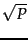 evenly-spaced skip pointers. This heuristic can be improved upon; it ignores any details of the distribution of query terms.
, use 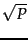 evenly-spaced skip pointers. This heuristic can be improved upon; it ignores any details of the distribution of query terms.
Building effective skip pointers is easy if an index is relatively static; it is harder if a postings list keeps changing because of updates. A malicious deletion strategy can render skip lists ineffective.
Choosing the optimal encoding for an inverted index is an ever-changing game for the system builder, because it is strongly dependent on underlying computer technologies and their relative speeds and sizes. Traditionally, CPUs were slow, and so highly compressed techniques were not optimal. Now CPUs are fast and disk is slow, so reducing disk postings list size dominates. However, if you're running a search engine with everything in memory then the equation changes again. We discuss the impact of hardware parameters on index construction time in Section 4.1 (page  ) and the impact of index size on system speed in Chapter 5 .
) and the impact of index size on system speed in Chapter 5 .
Exercises.
[4,6,10,12,14,16,18,20,22,32,47,81,120,122,157,180]and for the other it is the one entry postings list:
[47].Work out how many comparisons would be done to intersect the two postings lists with the following two strategies. Briefly justify your answers:
xunit=0.6cm,arcangle=30and the following intermediate result postings list (which hence has no skip pointers):
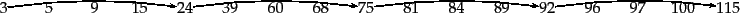
3 5 89 95 97 99 100 101Trace through the postings intersection algorithm in Figure 2.10 (page